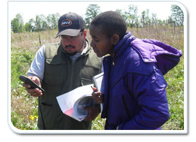

SCEP appointments must be assigned to positions with responsibilities that tie to their educational discipline. SCEP positions provide relevant work experience and exposure to public service while enhancing the student’s educational goals and shaping his or her career choices.
Like STEPS, SCEPs can be hired directly, and must be enrolled in a qualifying educational institution (in most cases, a college or university). When applying, they must provide a resume and transcripts; pay is also tied to the applicant’s level of education. Unlike STEPs, SCEP appointments are not considered temporary and, therefore, receive all Federal benefits. Depending on the state, a SCEP employee also may receive housing and/or transportation allowances.
SCEPs can be converted into full-time employees within 120 days of completing their academic requirements. They must have completed 640 hours of work as a SCEP. However, this requirement may be waived if the employee has completed 320 hours of work, has demonstrated exceptional job performance, and has demonstrated outstanding academic achievement.